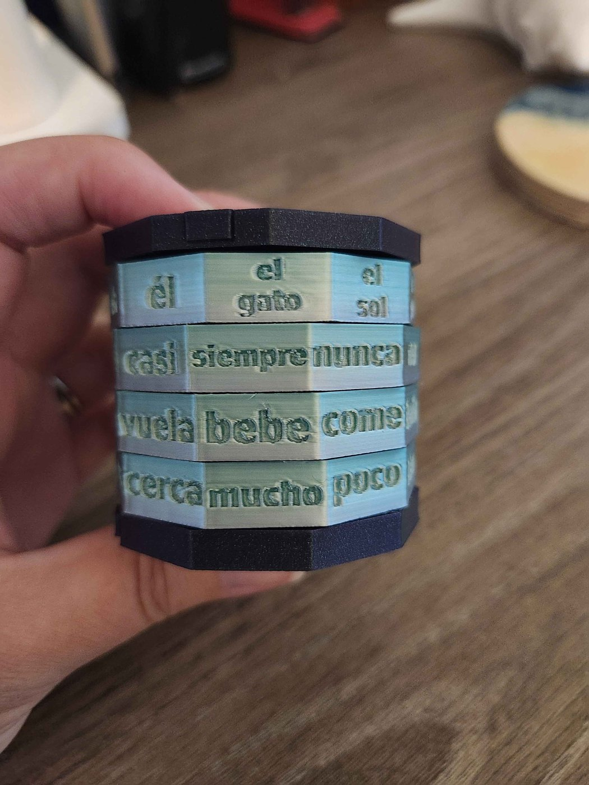
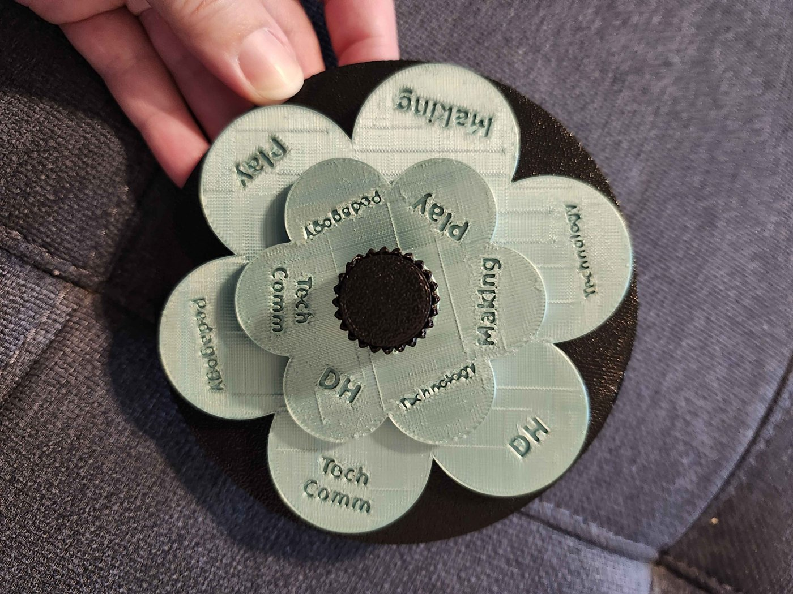

The prints from the talk
In Act III of the talk, Emily showed two of her p5.js sketches made physical with Claude:


Both were printed on a Bambu Lab A1 in PLA. The files and design history are at ekjphd.com/unmaking. Today's reference files are simpler teaching models of the same two ideas, generated from the Act II grammars.
0. Choose your mode
From Act II of the talk: Claude Code is a longarm.
- Freehand: you guide every stitch. Default mode: you approve every step.
- Computerized pantograph: the machine stitches edge to edge. Auto mode: the agent runs the whole loop.
- Either way, you pieced the top, chose the pattern, and fix the thread breaks.
Since August 2026, auto mode is the default in Claude Code for Pro, Max, and Team plans. A default is a decision someone else made for you. For this act, choose a mode where you approve each step, and use plan mode for the first two prompts.
1. Set up a repository
- On GitHub, create a new public repository (for example
my-grammar-object) and tick Add a README. - Upload your files: your flat grammar from Act II as
grammar.json, your sketch from Act III, and CLAUDE.md and process-log.md from this workshop. - Open claude.ai/code, connect GitHub, and start a session on the new repository. Claude Code also runs in the desktop app and in a terminal.
- To publish your page: Settings → Pages, deploy from the
mainbranch. The file namedindex.htmlbecomes the front page.
No subscription? Work the same steps in a free chat assistant: paste in your grammar and a prompt, copy the files it writes, upload them to the repository yourself, and turn on Pages. It's slower, and you see every file it writes.
2. Write the house rules
Claude Code reads CLAUDE.md at the start of every session. It's where you decide, once, which parts of the process stay yours. The template starts with:
- Plan before you build. For anything bigger than a one-line fix,
describe your plan and wait for me to say yes.
- Ask before each step. Make one change, tell me what changed and why, then stop.
- My words are mine. Never rewrite, add, or remove words in grammar.json
on your own. Show me the broken sentences and suggest options. I choose.
- Credit what we remix. Name it, link it, and keep its license in CREDITS.md.
- Keep a log. After each step, add a line to process-log.md.Edit these. Delete the ones you don't want and add your own. Which steps do you want to keep?
3. Plan before code
In plan mode, ask the agent to read your grammar back to you before it changes anything:
Read grammar.json. Don't change anything yet. Explain in plain language what
each symbol does, which rules are nested, and which choices are saved with
actions. Then tell me which parts could become physical parts of an object
that someone turns by hand, and which parts could not.Then ask for a flat, ring-ready version in your own words. The full sequence is in prompts.md. Read each plan before you approve it. Edit the prompts before you send them: the prompt is the source.
4. Check every sentence
Eight words on four rings make 4,096 sentences. Ten make 10,000. Nobody reads them all, but every one gets printed. This is a job an agent does well, as long as you decide what counts as broken:
Write a small script that prints every sentence the flat grammar can make.
Run it, then show me only the sentences that are ungrammatical or don't make
sense, grouped by the word that causes the problem. Don't fix them.
I'll choose which words to change.Write down which words you changed and why in process-log.md.
5. Preview it in 3D
Open cryptex-3d.html and paste in your flat grammar. Each #symbol# in origin becomes a ring, and each word becomes a face. Turn the rings, drag to orbit, and read sentences along the bright row.
Then ask your agent to build its own preview, and compare the two:
Add a p5.js sketch, cryptex.html, that shows the cryptex in 3D (WEBGL), with
buttons to turn each ring and a line of text showing the sentence on the
reading row. Use the grammar file directly. Comment the code for a beginner.Which version do you understand better? Which one would you rather maintain?
6. Make it printable
- In the preview, press Download .scad. You get an OpenSCAD file with your words in it. Or start from cryptex.scad or spinner.scad, or ask your agent to write one (prompt 5).
- Open it in OpenSCAD. Every measurement you might change is at the top: text size, ring length, clearance. Press F5 to preview and F6 to render, then File → Export → STL.
- Slice the STL in your printer's slicer (Bambu Studio, PrusaSlicer, or Cura). PLA, 0.2 mm layers. Rings stand on end and need no supports.
- Print one ring and the core first. If the ring binds, raise
clearance. If it wobbles, lower it. If the letters fill in, raisetext_depthortext_size.
The agent can't feel a ring bind. You can. That's the thread break from Act I's story: noticing it and deciding where to start again is your work.
These are teaching models: the rings spin freely, with no lock or click. For a real cryptex, remix a published design, as the talk's print did, and keep its license. No printer? Write each ring's words around a cardboard tube and slide the tubes onto a pencil.
7. Credit and label
Quilters argue about whether computer-guided quilting counts, and about who goes on the label: pieced by, quilted by. Finish your process-log.md with a label of your own:
Written by ______. Coded by ______. Printed by ______.Ask the agent to draft CREDITS.md (prompt 7), but write its last sentence yourself.
Unmake
- If my agent does all the work to create a website, a Tracery bot, a 3D print file, where is the human contribution? When does lowering barriers remove the point of making?
- Bethany Nowviskie's “Resistance in the Materials” names three: materials, tools, and time. The talk adds a fourth loss: control over the steps and decisions themselves, sold as convenience. Which steps did you keep today?
- A critical maker rejects, supplements, extends, and critiques the tool. Which of the four did you do?
- Look back at the label in your log. Would you sign it?
Reference files
- cryptex-3d.html
Paste a flat grammar, turn the rings, download an OpenSCAD file.
- cryptex.scad
Parametric word cryptex from
cryptex-grammar.json: rings, core, cap. - spinner.scad
Parametric flower spinner from
spinner-grammar.json: base, two petal layers, knob. - CLAUDE.md
House rules for the agent. Copy it into your repository and edit it.
- prompts.md
Seven prompts, from reading the grammar back to writing the credits.
- process-log.md
Who asked, who did, who decided. Ends with your label.